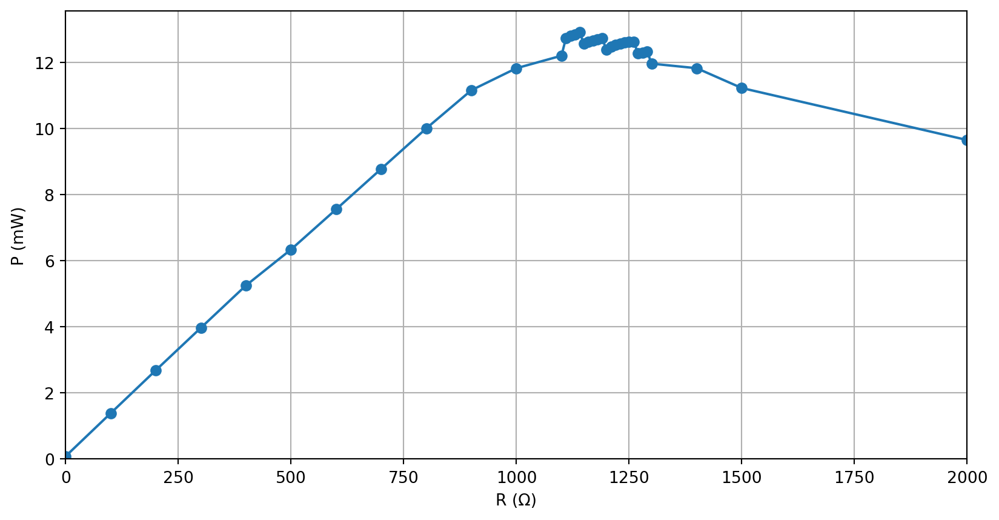

SunQuarTeX Example - cnpre
这是副标题
sun123zxy
Sunderland Quarry of Tectosilicates
2023-08-21
Section A
文字
长长长长长 long 长长长长长长长长长 long 长长长长长长长长长长长长长长长长长长长长长长长长长长长长长句子．
长长长长长长长长长长长长长长长长长长长长长长长长长长长长长长长长长长长长长长长长长长长段落．
- 左栏．
- 窄窄窄窄窄窄窄窄窄窄窄窄窄窄窄窄窄的左栏．
- 右栏．
- 宽宽宽宽宽宽宽宽宽宽宽宽宽宽宽宽宽宽宽宽宽宽宽宽宽宽宽宽宽宽宽的右栏．
列表
- 这是列表．
- 紧的列表．
噢
这是列表．
松的列表．
下面是一个定义列表．
- 自反性
-
\(a \sim a\)
- 反对称性
-
\(a \leq b \land b \leq a \implies a=b\)
- 传递性
-
\(a \leq b \land b \leq c \implies a \leq c\)
引用
Section B
Subsection 1
代码块
行间代码 print("Hello, SunQuarTeX").
表
| \(L_i \times C_j\) | \(2\) | \(\mathbb N\) | \(\mathbb R\) |
| \(2\) | \(4\) | \(\mathbb N\) | \(\mathbb R\) |
| \(\mathbb N\) | \(\mathbb N\) | \(\mathbb N\) | ? |
| \(\mathbb R\) | \(\mathbb R\) | ? | \(\mathbb R\) |
| \(L_i^{C_j}\) | \(2\) | \(\mathbb N\) | \(\mathbb R\) |
| \(2\) | \(4\) | \(\mathbb R\) | \(2^{\mathbb R}\) |
| \(\mathbb N\) | \(\mathbb N\) | ? | ? |
| \(\mathbb R\) | \(\mathbb R\) | ? | ? |
引用一下 表 1 (a)．
图

图 1: 这是一张插图
引用一下 图 1．
计算图
复杂的并列效果．（图 2, 图 2 (a), 图 2 (b)）


TikZ
Subsection 2
定理
定理 1 (测试定理) 这是一个定理． \[ \sum_{d \mid n} \varphi(d) = n \]
证. 这是一个以公式结尾的证明． \[ \sum_{d \mid n} \mu(d) = [n=1] \]
证. 这是一个比较长长长长长长长长长长长长长长长长长长长长长长长长长长长长长长长长长长长长长长长长长长长长长长长长长长长长长长长长长长长长长长长长的证明．
定义 1 这是一个定义．
例 1 (一个例子) 这是一个例子．
解. 这是例子的解．
习题 1 这是一个练习．
注记. 这是一个注记，习题 1 的注记．
引理 1 这是一个引理．
推论 1 这是一个推论，定理 1 的推论．
命题 1 这是一个命题．
猜想 1 这是一个猜想．
[1]
Y. Taigman, M. Yang, M. Ranzato, 和 L. Wolf, 《Closing the gap to human-level performance in face verification. deepface》, 收入 Proceedings of the IEEE Computer Vision and Pattern Recognition (CVPR), 页 6.
[2]
全国信息安全标准化技术委员会, 《《信息安全技术远程人脸识别系统技术要求》（GB/T38671-2020）》. https://std.samr.gov.cn/gb/search/gbDetailed?id=A47A713B767814ABE05397BE0A0ABB25, 2020年.
[3]
M. Turk 和 A. Pentland, 《Eigenfaces for Recognition》, Journal of Cognitive Neuroscience, 卷 3, 期 1, 页 71–86.